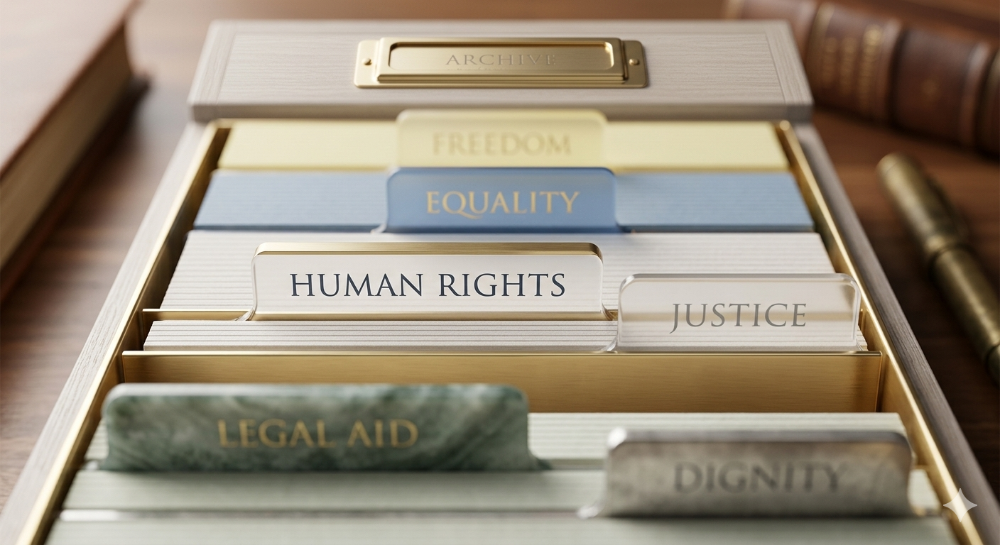

Access to Justice: Making Fair Systems Reach Everyone
SDG 16 is not only about writing better laws. It is about whether ordinary people can actually use those laws when they need them most. This page looks at what access to justice really means in practice, who gets left behind and why, and what communities and individuals can do to help close that gap.
Why this topic matters
- When legal systems feel expensive or confusing, people simply stop trying to use them.
- Equal access to justice reduces inequality and rebuilds public trust in institutions.
- Communities where justice is reachable for everyone are safer and more cohesive.
What Access to Justice Really Means
Access to justice is more than having a legal system in place. It means people can understand their rights, find help when they need it and receive fair outcomes through institutions they can trust. SDG 16.3 makes this explicit by calling for equal access to justice for all, because formal laws mean very little if the people they are meant to protect cannot reach them.
In practice this might look like a tenant using a free legal clinic to challenge an unlawful eviction, a young person knowing their rights during a police stop, or a worker safely reporting unsafe conditions without fear of losing their job. Justice becomes meaningful when it works for ordinary people in real situations, not just in courtrooms.

Core elements of access to justice
- Clear information about rights written in plain, understandable language
- Affordable or free legal support for people who cannot pay
- Fair treatment regardless of income, background or identity
- Institutions that are transparent and accountable to the public
Why Many People Still Face Barriers
Even where legal systems exist, they are not equally reachable. Cost is one of the biggest obstacles. Many people cannot afford a solicitor, and without legal representation the process becomes too difficult to navigate alone. Distance is another issue, particularly for people in rural areas where courts and legal services are far away. For migrants, people with disabilities and those living in poverty, these difficulties are often compounded together.
The root issue is rarely an absence of laws. It is that the path to help is too expensive, too complicated or too slow for most people to follow. When the system fails them consistently, people stop trying to use it and that silence allows injustice to continue unchallenged.
Common barriers people face
- High legal costs with no affordable alternative available
- Complex paperwork and language that is difficult to understand
- Physical distance from legal services, especially in rural communities
- Low trust in institutions based on past experiences of unfair treatment
- Fear of retaliation or social pressure to remain silent
How Digital Tools Can Improve Justice
Technology has created real opportunities to make justice more accessible. Online complaint portals, digital legal information platforms and remote advice services remove some of the most practical barriers, particularly for people who cannot travel or afford in-person appointments. These tools directly support SDG 16.6, which focuses on building transparent and accountable institutions at every level.
Real examples already exist. In the UK, HM Courts and Tribunals Service launched an online civil claims system that allows people to submit small claims without attending court. In Kenya, mobile legal aid platforms have reached rural communities with no previous access to any legal support. These are not theoretical possibilities; they are working solutions.
What effective digital justice looks like
- Legal information written in plain language and easy to search
- Online forms for submitting complaints without needing a solicitor
- Remote appointment systems that work on basic smartphones
- Websites designed to meet accessibility standards for all users
Technology alone is not enough. People without reliable internet access, digital skills or suitable devices are still excluded if online channels are the only option. The strongest systems pair digital tools with in-person support, so that improving access for some does not quietly remove it for others.
What Communities and Citizens Can Do
Governments and courts cannot close the justice gap alone. Communities, schools, youth groups and civil society organisations all have a role in making justice more visible and easier to reach. SDG 16 recognises that inclusive participation matters just as much as institutional reform, because trust in any system is built from the ground up.

What communities can do
At a local level, communities can run legal awareness sessions in schools and community centres. Neighbourhood mediation programmes reduce pressure on formal legal systems and rebuild trust between groups. Community-led reporting channels give residents a safe way to flag corruption or unfair treatment without needing expensive legal support.
- Organise legal rights workshops in accessible community spaces
- Support local mediation and conflict resolution services
- Create trusted channels for reporting injustice at a local level
What individuals and students can do
As students, there are straightforward ways to contribute. Learning your own rights is a starting point. Sharing that knowledge with people around you, using feedback channels when institutions fall short and supporting organisations that offer free legal guidance all feed into the principles of SDG 16.
- Learn about your rights and share that knowledge with others
- Use official feedback and reporting channels when something is wrong
- Support or volunteer with organisations that provide free legal guidance